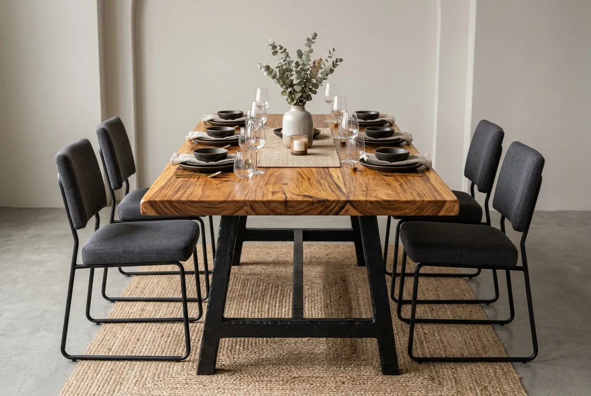

AA-AC-479 · Cat 48
Turned Hardwood Baluster Table Legs (Set of 4)
Handcrafted DIY Furniture handcrafted export piece engineered for Rockler, Home Depot wholesale programs.
$26.00 – $34.00 FOB Mundra · per unit · MOQ 25 Pcs
| Material & construction | 29" tall 4"x4" turned farmhouse dining table legs ready for staining or painting |
|---|---|
| Dimensions | 4" x 4" x 29" H (ea) / 10 x 74 cm |
| Carton volume | 0.045 CBM / unit |
| Minimum order | 25 Pcs |
| Lead time | 45–60 Days (FOB Mundra) |
| Western retail benchmark | $140 – $195 |
| Style | DIY Furniture |
| Indicative HS heading | 8306.29 — Wrought-iron decorative articles |
| Typical buyers | Rockler, Home Depot |
Indicative HS heading only — your customs broker confirms final classification. Kiln-dried 8–10% moisture, ISPM-15 dunnage, VRIKSH / Lacey / EUDR paperwork on request.